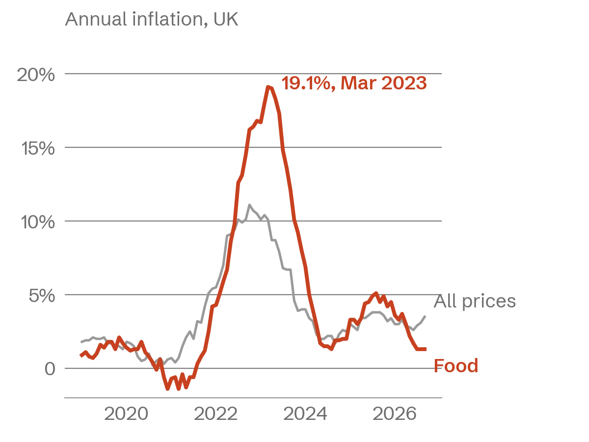
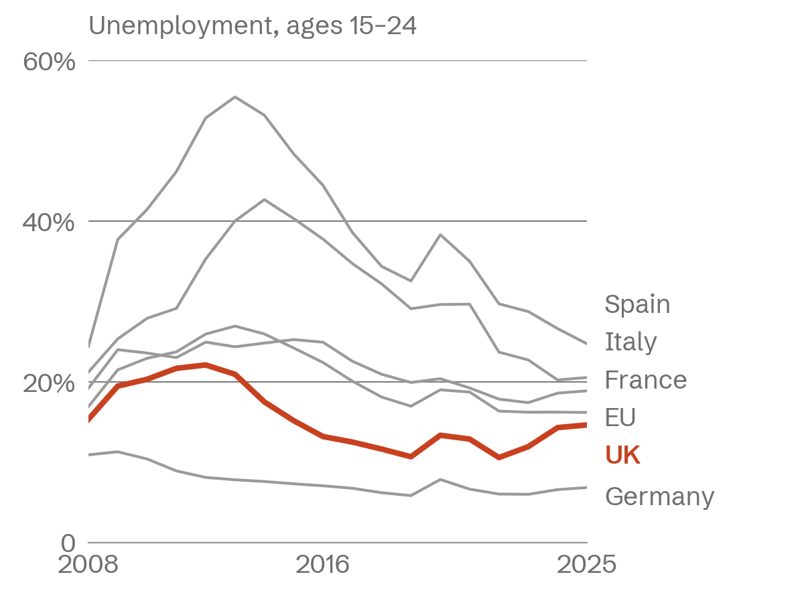

I turn messy data into answers a team can act on.
I'm Elena, a junior data analyst in Manchester. I work in SQL, Python and Tableau, and spent last summer on a grocery chain's real stock data.
Based in
Manchester, or remote
Looking for
Junior analyst roles
Can start
November 2026
Selected work
All on public data, so every number can be checked.

A wet weekend costs London a third of its bike hires
Three years of daily Santander Cycles hires matched to rainfall. Wet weekends lost 32% of riders, wet weekdays only 23%: commuters ride anyway.
Data: TfL, Open-Meteo, 2023–25 · Python, pandas, matplotlib
Read the write-up
Food prices rose 19.1% in a year, nearly double overall inflation
My dissertation: seven years of monthly ONS price indices, and which foods drove the March 2023 peak.
Data: ONS CPI · Excel, Python, Tableau
Read the write-up
UK youth unemployment rose 4 points in three years while the EU held flat
Ages 15 to 24: the UK against the EU and its four largest economies since 2008.
Data: World Bank (ILO estimates) · SQL, Tableau
Read the write-upExperience
Data Analyst Intern, Northfield Grocers
Jun – Aug 2025 · Leeds · 10-week summer internship
Rebuilt the weekly stock report in SQL and Power BI. It went from four hours of copying spreadsheets to ten minutes, and 38 store managers now read it every Monday.
SQL, Power BI, Excel
Student Ambassador, University of Leeds
Sep 2023 – May 2026 · Part-time, alongside my degree
Led campus tours for prospective students and built the sign-up tracker the team now uses to staff open days.
Education
BSc Economics and Statistics, First Class
2022 – 2026 · University of Leeds
Dissertation on the 2022–23 food price surge. Modules in econometrics, time series and survey methods.
Skills
Analysis
SQL, Python (pandas), Excel, regression, time series, A/B test basics
Visualisation
Tableau, Power BI, matplotlib
Tools
Git, Jupyter, Google Sheets, dbt (learning)
Working with people
Writing findings for non-analysts, presenting to store managers